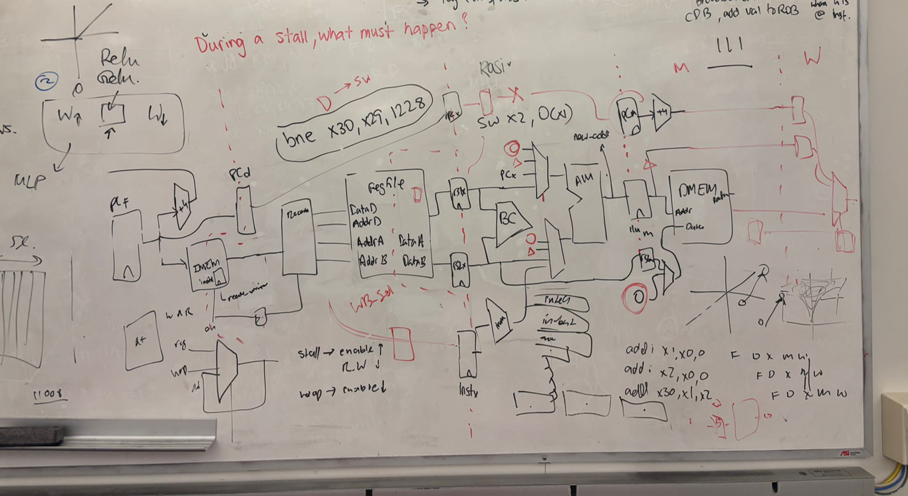
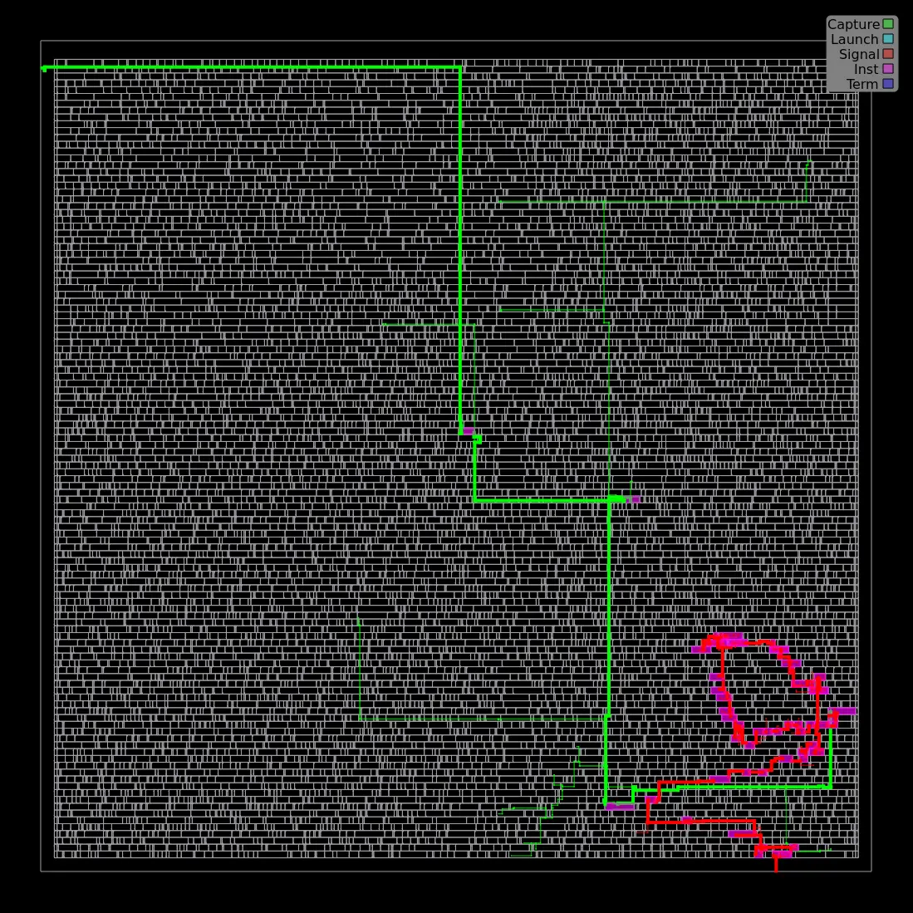
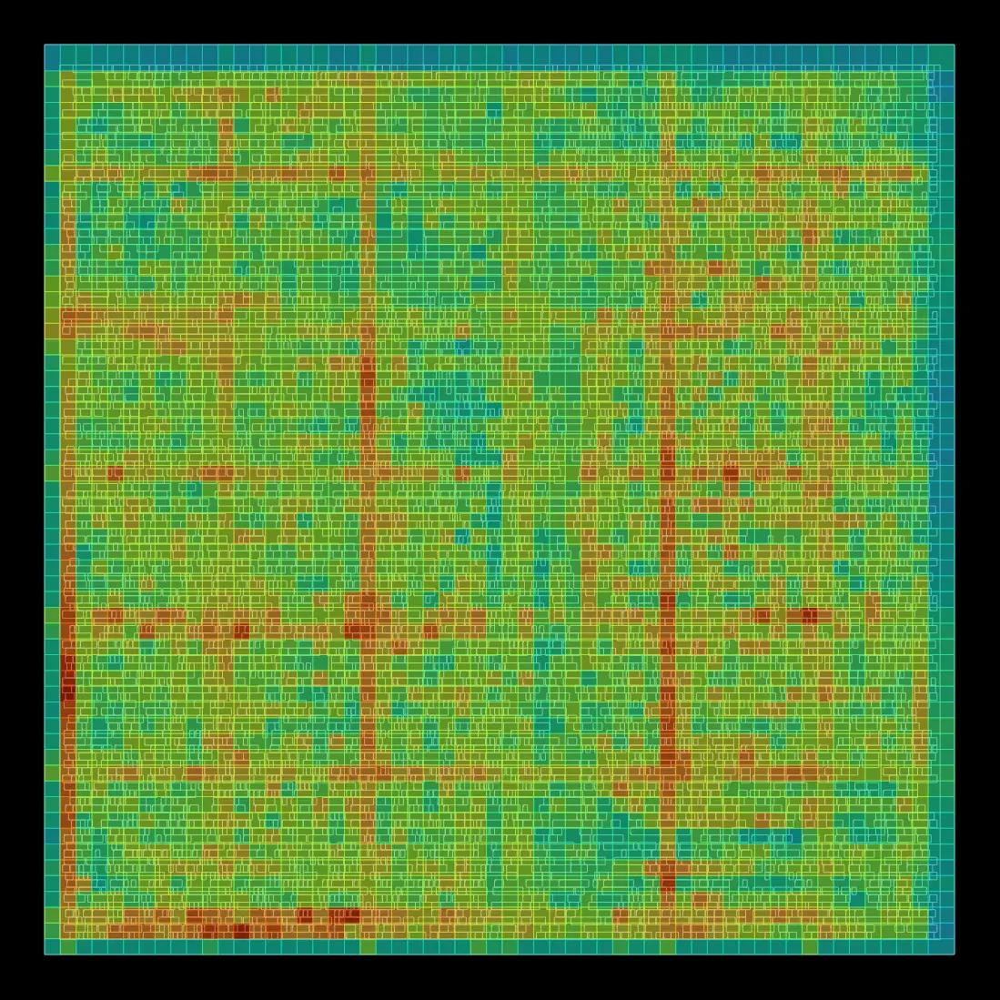
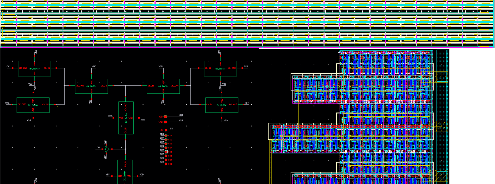

RTL Design Engineer
I work at the RTL level, making informed decisions based on a full-stack understanding of digital systems from transistors to microarchitecture
About
If I were to describe myself in one word, it would be inquisitive. That curiosity has led me to work across multiple levels of abstraction, from transistor-level circuit design to FPGA-based RTL development and ASIC implementation. It has also given me an appreciation for how decisions made at one level of the stack influence timing, power, area, physical implementation, and ultimately the performance of the final chip.
My BEng in Nanotechnology Engineering and MEng from the University of Waterloo gave me a foundation in transistor physics, analog and digital circuit design, computer architecture, and VLSI design before I specialized in RTL development and digital IC implementation.
I enjoy understanding systems from the ground up and seeing how each layer influences the next. I'm particularly interested in the hardware that powers modern AI systems. I'm comfortable in designing hardware that makes algorithms run faster and more efficiently.
Along the way, I've had the opportunity to work in a variety of roles. As a teaching assistant, I guided undergraduate students through the RTL-to-GDS flow, helping them connect digital design, verification, synthesis, and physical implementation. I've also worked as a Machine Learning Engineer, applying AI to improve clinicians' daily workflows, and as a Test and Development Engineer, developing protective coatings for automotive glass. Although these roles were quite different, each reinforced the same skill: target complex problems by exploring them from different perspectives.
For me, the most rewarding part of engineering is seeing how an idea evolves into a complete system. Being able to contribute at different points along that journey is what keeps me curious.
Projects
OpenVLA-7B is a vision-language-action model built on a LLaMA-2 backbone, designed to control robots through natural language instructions. Running it at full precision on embedded hardware yields only ~5 Hz — too slow for real-time manipulation. RAIHA targets hardware acceleration of the LLaMA backbone to push throughput to 25–50 Hz, making real-time robotic control viable. RTL modules include a reduction tree, scale register file, and systolic array, verified against 224 golden reference files captured via PyTorch forward hooks.
The videos below show the robot attempting to pick up a ramekin and place it on a plate. The left video uses per-tensor W4A4 quantization — the model is too degraded to complete the task. The right video uses per-group quantization (gs=64), which recovers model accuracy and allows the robot to complete the task successfully.
Before: Per-tensor W4A4 (0% task success)
After: Per-group gs=64 (88.4% task success)
Pipelined RISC-V CPU synthesized and deployed on a PYNQ-Z1 FPGA, extended beyond course content to a SoC with memory-mapped PWM and SPI peripherals. Two-FF synchronizer handling SCLK domain to the system clock domain. Fixed priority arbitration through SPI master and CPU writes to shared PWM config registers.

IBERT is an integer-only BERT inference accelerator implemented on a PYNQ-Z1 FPGA at 100 MHz. The core challenge is replacing all floating-point operations with integer arithmetic since every nonlinear function needs a hardware-friendly integer approximation. Implemented modules include: a fixed-point GELU using polynomial approximation of the error function, an integer Softmax using a max-subtraction stability trick, a fixed-point exp pipeline, and reciprocal division to replace N divides with one shift-multiply, and a LayerNorm using iterative integer square root. The attention head reuses a single systolic array across Q, K, and V projections via a two-FSM architecture: a transfer FSM for input muxing and an output FSM for result demuxing. AXI-Stream interfaces handle handshake-driven flow control between modules. Currently running modules through an RTL-to-GDS flow on ASAP7 via OpenROAD to build intuition for closing timing at the RTL level. Targeting 1 GHz; currently achieving 852 MHz. Critical path and congestion analysis inform RTL-level fixes including operand width reduction and pipeline stage splitting.
Critical Path — GELU Module (ASAP7)

Routing Congestion Heatmap

Post-route analysis on ASAP7 at 1 GHz target. The critical path (left) traces from input port q1 across the die to the multiplier tree in the bottom-right corner: a long wire contributes RC delay beyond gate logic alone. The congestion heatmap (right) shows high routing density (orange/red) along vertical and horizontal channels. fmax achieved: 852 MHz.
Designed and laid out a 256-bit scan chain using Transmission Gate Flip-Flops (TGFF) in Cadence Virtuoso on TSMC 65nm. Utilised a contention-free topology. H-tree clock distribution, Monte Carlo analysis, pre/post-layout simulation, with power-delay product as the figure of merit.

Currently Pursuing
Digital PHY controller implementing the PIPE interface for PCIe: link training state machine (LTSSM), 8b/10b encoding with running disparity, and a clock-compensation elastic buffer handling ±300 ppm drift via SKP insertion/deletion. Verified with a UVM environment; targeting ASAP7 via OpenROAD.
Skills
RTL & Verification
ASIC Flow
FPGA, Interfaces, and Protocols
Full-Custom IC
Software & Tools
Experience
University of Waterloo
Guided students through RTL-to-GDS flows including synthesis, place-and-route, and static timing analysis. Mentored students in debugging FPGA implementations and achieving timing closure.
Healthcare Systems
Built a pose estimation pipeline for chronic lower back pain assessment using MobileNetV2 with cyclic checkpointing and a MediaPipe-style cascade, optimizing for inference latency.
MIS Electronics
Developed SpectraView, a Python/Tkinter Raman spectroscopy application with a chemical signature database and calibration curve engine. Work contributed to a peer-reviewed publication.
Alchemy
Analyzed test data to deduce improvements to adhesive formulations, addressing degradation mechanisms to enhance the durability of a flagship nanocoating. Retrofitted lab equipment with custom hardware to enable affordable in-house testing. Used SolidWorks and 3D printing to fabricate test components, gaining exposure to design iteration and variance reduction.
Contact
I'm actively looking for RTL design roles. My experience includes working with AI accelerators and custom silicon, however I would be excited to tackle new challenges as well! If that sounds like a fit, I'd love to connect.